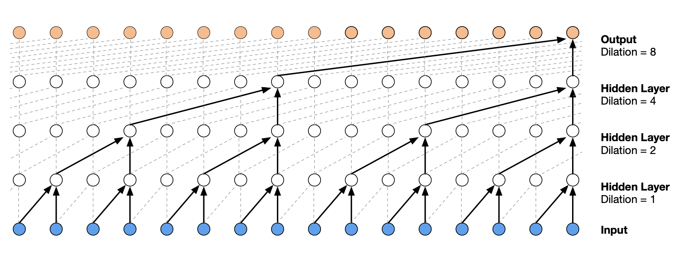

PyTorch et WaveNet#
Dans ce cours, nous nous inspirons de l’architecture du modèle WaveNet proposée par Google DeepMind pour le traitement de l’audio. Notre objectif est d’utiliser un plus grand nombre de caractères pour le contexte de notre prédicteur du prochain mot.
Architecture#
L’architecture d’un WaveNet est une architecture hiérarchique qui accorde plus de poids aux éléments de contexte les plus proches.
Voici à quoi ressemble l’architecture :

Figure extraite de l’article original.
Implémentation du modèle fully connected avec PyTorch#
Le cours commence par une adaptation des concepts du cours précédent en utilisant les fonctions de PyTorch.
Dataset#
Reprenons le code du notebook précédent pour la génération du dataset.
import torch
import torch.nn.functional as F
import matplotlib.pyplot as plt # for making figures
from torch.utils.data import TensorDataset, DataLoader, random_split
%matplotlib inline
# Lecture du dataset
words = open('prenoms.txt', 'r').read().splitlines()
print(words[:8])
['MARIE', 'JEAN', 'PIERRE', 'MICHEL', 'ANDRÉ', 'JEANNE', 'PHILIPPE', 'LOUIS']
words = open('prenoms.txt', 'r').read().splitlines()
chars = sorted(list(set(''.join(words))))
stoi = {s:i+1 for i,s in enumerate(chars)}
stoi['.'] = 0
itos = {i:s for s,i in stoi.items()}
Pour changer, augmentons le contexte en le passant de 3 à 8. Cela nous donnera un indicateur de performance car nous utiliserons aussi 8 pour notre WaveNet.
block_size = 8 # La longueur du contexte, combien de caractères pour prédire le suivant ?
X, Y = [], []
for k,w in enumerate(words):
context = [0] * block_size
for ch in w + '.':
ix = stoi[ch]
X.append(context)
Y.append(ix)
context = context[1:] + [ix]
X = torch.tensor(X)
Y = torch.tensor(Y)
dataset=TensorDataset(X, Y)
train_size = int(0.8 * len(dataset))
val_size = int(0.1 * len(dataset))
test_size = len(dataset) - train_size - val_size
train_dataset, val_dataset, test_dataset = random_split(TensorDataset(X, Y),[train_size, val_size, test_size])
train_loader = DataLoader(train_dataset, batch_size=256, shuffle=True)
val_loader = DataLoader(val_dataset, batch_size=256, shuffle=False)
test_loader = DataLoader(test_dataset, batch_size=256, shuffle=False)
Création du modèle et entraînement#
Pour commencer, nous allons réimplementer le modèle du notebook précédent, mais avec PyTorch.
import torch
import torch.nn as nn
import torch.nn.functional as F
class fcn(nn.Module):
def __init__(self,embed_dim=10,context_len=8,hidden_dim=300, *args, **kwargs) -> None:
super().__init__(*args, **kwargs)
self.embed_dim=embed_dim
self.context_len=context_len
#La fonction nn.Embedding de pytorch est l'équivalent de la matrice C
self.embedding=nn.Embedding(46,embed_dim)
self.layer1=nn.Linear(embed_dim*context_len,hidden_dim)
self.layer2=nn.Linear(hidden_dim,46)
def forward(self,x):
embed=self.embedding(x) # Remplace la matrice C
embed=embed.view(-1,self.embed_dim*self.context_len)
hidden=F.tanh(self.layer1(embed))
logits=self.layer2(hidden)
return logits
model=fcn(context_len=8)
epochs=50
lr=0.2
optimizer=torch.optim.SGD(model.parameters(),lr=lr)
for p in model.parameters():
p.requires_grad = True
Notes : Pour reproduire à l’identique le code du notebook précédent, il faudra réduire le learning rate par un facteur 10 à la moitié de l’entraînement. En PyTorch, on peut faire ça à l’aide du scheduler. Il existe plusieurs types de scheduler : LambdaLR (pour changer le learning rate par rapport à une fonction), StepLR (pour diminuer le learning rate toutes les n epochs), LinearLR (pour diminuer le learning rate de manière linéaire), ReduceLROnPlateau (pour diminuer le learning rate dès que le loss ne change plus), OneCycleLR (pour commencer avec un learning rate faible puis l’augmenter et le redescendre) et bien d’autres.
Pour accélérer la convergence d’un modèle, je vous conseillerais l’utilisation du OneCycleLR (pour en savoir plus, consultez ce blogpost). Pour obtenir un modèle très performant, je vous conseillerais plutôt le ReduceLROnPlateau. Dans tous les cas, il est intéressant d’expérimenter vous-même avec les différents scheduler.
lossi=[]
lossvali=[]
stepi = []
for epoch in range(epochs):
loss_epoch=0
for x,y in train_loader:
# forward pass
logits=model(x)
loss = F.cross_entropy(logits, y)
# retropropagation
optimizer.zero_grad()
loss.backward()
# Mise à jour des poids du modèle
optimizer.step()
loss_epoch+=loss
loss_epoch=loss_epoch/len(train_loader)
stepi.append(epoch)
lossi.append(loss_epoch.item())
# Validation
loss_val=0
for x,y in val_loader:
logits=model(x)
loss = F.cross_entropy(logits, y)
loss_val+=loss
loss_val=loss_val/len(val_loader)
lossvali.append(loss_val.item())
if epoch%10==0:
print(f"Epoch {epoch} - Training loss: {loss_epoch.item():.3f}, Validation loss: {loss_val.item():.3f}")
Epoch 0 - Training loss: 2.487, Validation loss: 2.427
Epoch 10 - Training loss: 2.056, Validation loss: 2.151
Epoch 20 - Training loss: 1.952, Validation loss: 2.114
Epoch 30 - Training loss: 1.896, Validation loss: 2.146
Epoch 40 - Training loss: 1.864, Validation loss: 2.092
plt.plot(stepi, lossi)
plt.plot(stepi,lossvali)
[<matplotlib.lines.Line2D at 0x74c19c438d50>]

La différence entre la courbe de training et de validation indique que le modèle overfit un peu.
# On annule le calcul des gradients car on n'est plus en phase d'entraînement.
model.eval()
loss_test=0
for x,y in test_loader:
# forward pass
logits=model(x)
loss = F.cross_entropy(logits, y)
loss_test+=loss
loss_test=loss_test/len(test_loader)
print(loss_test)
tensor(2.1220, grad_fn=<DivBackward0>)
Le loss de test est un peu supérieur au loss de train, donc le modèle a un peu overfit, mais ça reste léger et on a encore de la marge pour augmenter les capacités du réseau. On peut maintenant vérifier la qualité de la génération de prénoms.
for _ in range(5):
out = []
context = [0] * block_size
while True:
logits=model(torch.tensor([context]))
probs = F.softmax(logits, dim=1)
ix = torch.multinomial(probs, num_samples=1).item()
context = context[1:] + [ix]
out.append(ix)
if ix == 0:
break
print(''.join(itos[i] for i in out))
LOUIS-ANDRÉ.
YOHES.
BRES.
TERIGAND.
CONKHE.
Les prénoms générés sont corrects, mais améliorables. Voyons voir si on peut obtenir un meilleur loss sur les données de test avec l’approche WaveNet.
Implémentation du WaveNet avec PyTorch#
Le dataset est le même que pour la partie précédente, pas besoin de changer quoi que ce soit.
Création du modèle#
Il est temps de créer notre modèle. Pour plus de simplicité, on utilise nn.Sequential pour regrouper nos couches.
class wavenet(nn.Module):
def __init__(self,embed_dim=10,hidden_dim=128, *args, **kwargs) -> None:
super().__init__(*args, **kwargs)
self.net=nn.Sequential(nn.Embedding(46,embed_dim),
# B*8*10
FlattenConsecutive(2), nn.Linear(embed_dim*2,hidden_dim),nn.Tanh(),
# B*4*hidden_dim
FlattenConsecutive(2), nn.Linear(hidden_dim*2,hidden_dim),nn.Tanh(),
# B*2*hidden_dim
FlattenConsecutive(2), nn.Linear(hidden_dim*2,hidden_dim),nn.Tanh(),
# B*hidden_dim
nn.Linear(hidden_dim,46)
)
def forward(self,x):
logits=self.net(x)
return logits
On initialise notre modèle et les hyperparamètres.
model=wavenet()
epochs=40
lr=0.2
optimizer=torch.optim.SGD(model.parameters(),lr=lr)
for p in model.parameters():
p.requires_grad = True
Et on lance l’entraînement.
lossi=[]
lossvali=[]
stepi = []
for epoch in range(epochs):
loss_epoch=0
for x,y in train_loader:
logits=model(x)
loss = F.cross_entropy(logits, y)
# retropropagation
optimizer.zero_grad()
loss.backward()
optimizer.step()
# Mise à jour des poids du modèle
loss_epoch+=loss
loss_epoch=loss_epoch/len(train_loader)
stepi.append(epoch)
lossi.append(loss_epoch.item())
# Validation
loss_val=0
for x,y in val_loader:
logits=model(x)
loss = F.cross_entropy(logits, y)
loss_val+=loss
loss_val=loss_val/len(val_loader)
lossvali.append(loss_val.item())
if epoch%10==0:
print(f"Epoch {epoch} - Training loss: {loss_epoch.item():.3f}, Validation loss: {loss_val.item():.3f}")
Epoch 0 - Training loss: 2.541, Validation loss: 2.459
Epoch 10 - Training loss: 2.013, Validation loss: 2.094
Epoch 20 - Training loss: 1.898, Validation loss: 2.096
Epoch 30 - Training loss: 1.834, Validation loss: 2.060
plt.plot(stepi, lossi)
plt.plot(stepi,lossvali)
[<matplotlib.lines.Line2D at 0x74c21819d710>]
model.eval()
loss_test=0
for x,y in test_loader:
# forward pass
logits=model(x)
loss = F.cross_entropy(logits, y)
loss_test+=loss
loss_test=loss_test/len(test_loader)
print(loss_test)
tensor(2.0132, grad_fn=<DivBackward0>)
On obtient un loss très correct et inférieur à celui du modèle Fully Connected avec un contexte de 8.
Notes : En regardant la courbe de validation par rapport à la courbe de training, on se rend compte qu’il y a peut-être un problème (et pareil avec le modèle Fully Connected de contexte 8). À vous de voir si vous arrivez à corriger ce problème avec ce que vous avez appris dans les cours précédents (voir cours sur les réseaux fully connected).
for _ in range(5):
out = []
context = [0] * block_size
while True:
logits=model(torch.tensor([context]))
probs = F.softmax(logits, dim=1)
ix = torch.multinomial(probs, num_samples=1).item()
context = context[1:] + [ix]
out.append(ix)
if ix == 0:
break
print(''.join(itos[i] for i in out))
MARICE.
JEXE.
RAYEDE.
CHAHI.
RISHAE.
La génération de prénoms est de mieux en mieux !
Exercice : Pour vous entraîner, essayez de modifier les paramètres d’entraînement, l’architecture du réseau et autres pour obtenir un loss inférieur à 2.0 sur les données de test. Point bonus si vous réduisez le nombre de paramètres du modèle.
Comment gérer l’architecture hiérarchique#
Ce qu’on veut dans notre modèle, c’est traiter en parallèle des groupes d’embedding en regroupant les caractères consécutifs. Sur PyTorch, si on fait passer un tenseur de taille \(B \times L \times C\) dans une couche linéaire de taille \(C \times H\), on obtient un tenseur de taille \(B \times L \times H\), et c’est exactement ce que l’on veut pour implémenter le réseau WaveNet.
Maintenant, il faut trouver comment modifier la taille du tenseur pour faire les opérations du WaveNet. Nos 8 embedding sont regroupés par deux puis traités en parallèle. À la couche suivante, ils sont à nouveau regroupés par deux. Donc à chaque étape, on double la taille \(H\) (ou \(C\)) et on divise par deux \(L\).
Pour être plus clair, à la première étape, nous avons un tenseur de taille \(B \times 8 \times 10\) que l’on veut transformer en tenseur de taille \(B \times 4 \times 20\). On peut implémenter ça avec view() de PyTorch.
Essayons de formaliser ça avec une couche que l’on pourra utiliser dans notre réseau :